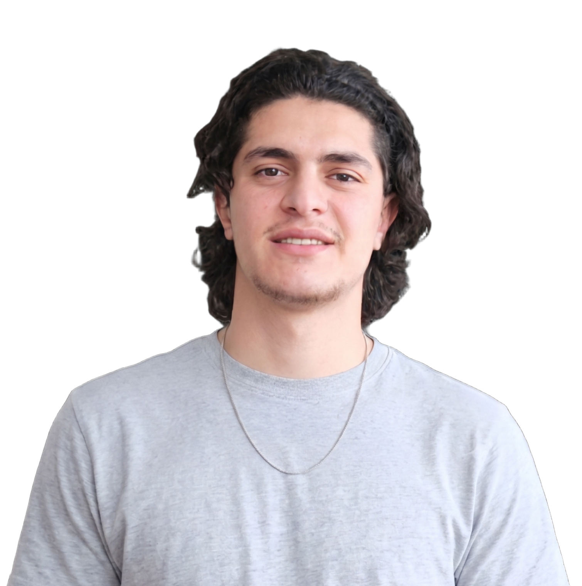
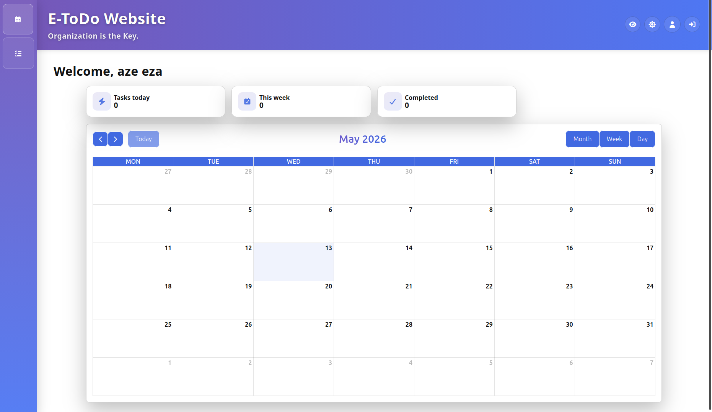
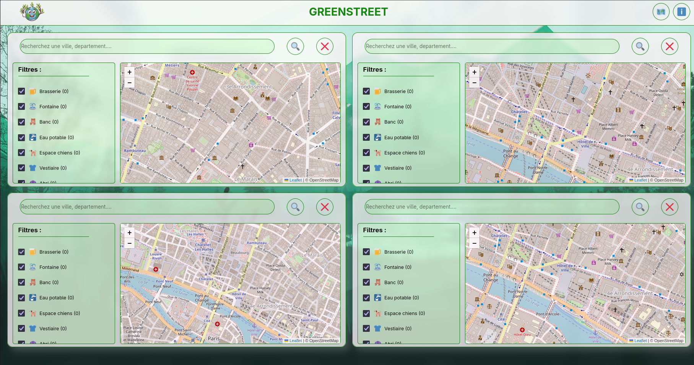
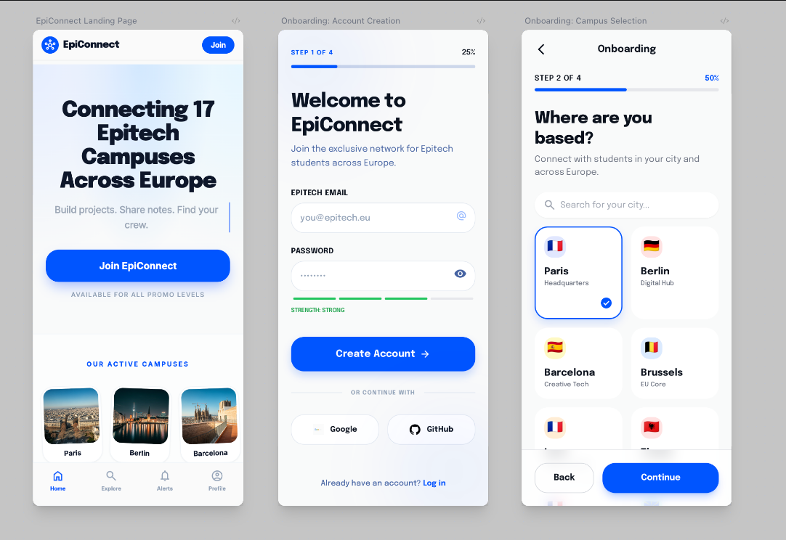
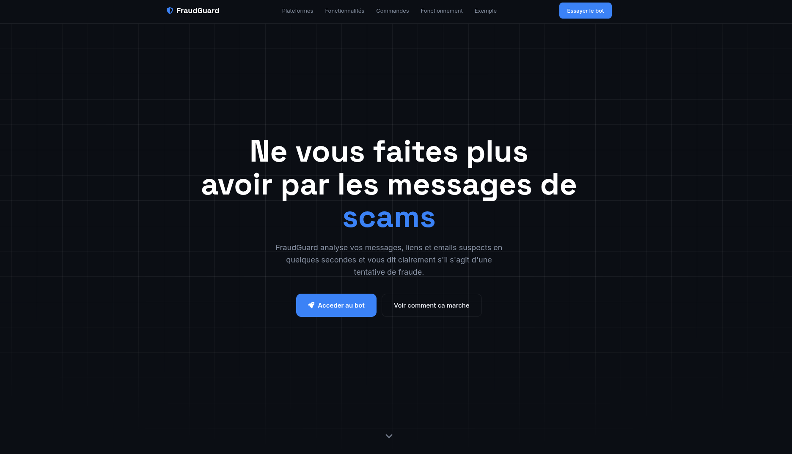

Abdullah TEMIR
Étudiant en Bachelor à EPITECH Lyon< Passionné par le code >

À propos de moi
Mon Parcours
Epitech Lyon (2025-2028)
ActuellementSpécialisation en programmation.
Lycée Arbez Carme (2021-2024)
Diplômé en 2024BAC Pro Cybersécurité (CIEL). Développement d'une grande autonomie.
Collège Xavier Bichat, Nantua (2017-2021)
Diplômé en 2021 · Mention BienBrevet des collèges. Premiers pas en informatique et développement du goût pour les sciences.

Expériences Clés
Shopytech Destockeur
2022 – 2024 · 12 semaines cumuléesDiagnostic, réparation et micro-soudure de PC, consoles et appareils électroniques. Vente de matériel informatique aux clients.
Chalon Megard
Sept. – Oct. 2023 · 4 semainesCâblage de baies de brassage, inventaire du parc informatique sur Excel, collecte et démontage de PC en fin de vie.
L'Atelier
Mai – Juil. 2022 · 6 semainesInstallation de machines virtuelles (VirtualBox + Winimage), câblage de distributeurs automatiques.
Point Frais
Nov. – Déc. 2024Vendeur en Boucherie, Gestion des stocks et mise en rayon.
Mes Compétences
Développement Web
HTML, CSS, JavaScript, Python, Bash, SQL — avec Git pour le versioning de chaque projet.
Maintenance & Hardware
Diagnostic, réparation et micro-soudure de PC, consoles et appareils électroniques. Câblage réseau et gestion de parc.
Systèmes & Cybersécurité
Linux, Virtualisation (VirtualBox), notions de sécurité réseau, diagnostic système et gestion des accès (BAC Pro CIEL).
Langues
Français & Turc (courant), Anglais (indépendant), Italien (débutant).
Savoir-être
Mon Apprentissage
Cette année à Epitech m'a permis de franchir un cap décisif : passer du hardware pur au développement logiciel professionnel. La pédagogie active d'Epitech m'a appris à chercher des solutions par moi-même, à lire de la documentation technique et à itérer rapidement sur mes projets.
Versioning & Collaboration : Maîtrise de Git et GitHub pour gérer l'historique de mes projets, travailler en branches et collaborer efficacement avec d'autres développeurs. Un réflexe devenu naturel pour chaque nouveau projet.
Développement Web Front-End : Consolidation de mes bases HTML/CSS/JavaScript à travers des projets concrets — ce portfolio, E-Todo, Product Design. Apprentissage des bonnes pratiques : structure sémantique, responsivité, accessibilité et SEO.
Systèmes & Outils : Approfondissement de Linux et des scripts Bash pour automatiser des tâches et gérer l'environnement de développement. Mon background en cybersécurité (BAC Pro CIEL) m'aide à penser la sécurité dès la conception.
Ma progression la plus significative ? Comprendre que la clarté du code importe autant que son fonctionnement — un programme qui marche mais qu'on ne peut pas relire n'est qu'un bug en attente.
Mes Projets




Me Contacter
📍 01130 Nantua
📧 temirabdullah04@gmail.com
📞 07 69 06 02 75